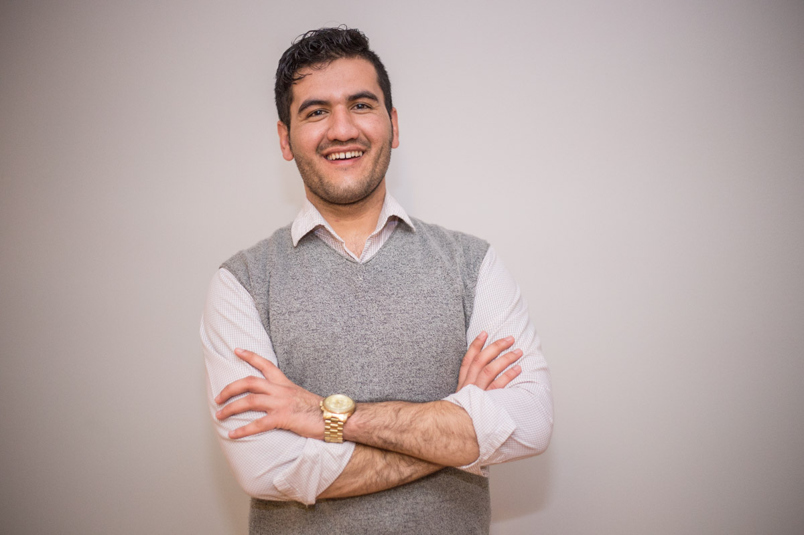
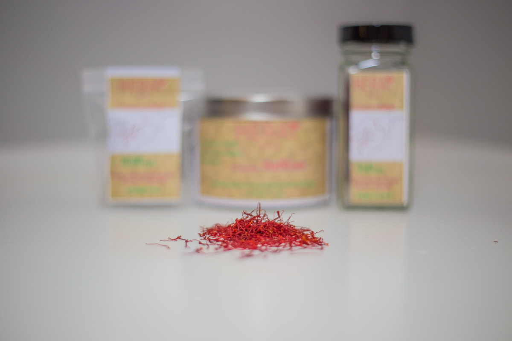
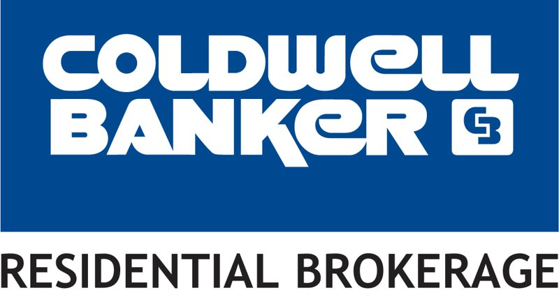

My name is Mohammad Salahy, I am orginally from Herat Afghanistan. I came to United States fours years ago.
I started a small business on April 2017, its called Heray Spice. Currenlty I am the the CEO and CO-Founder at Heray Spice and Heray Charity Foundation.
My major is ITM and I am very enthusiastic to learn coding.

I am the CEO and CO-Founder of Heray Spice. We cultivate and import natural and authentic Afghan saffron from rural areas of Afghanistan and distribute to fine-dining restaurants and grocery stores.
We contribute 10% of our company net income to Heray Charity Foundation to building schools for Afghan Children. Since our establishment we sent 12 students back to school. At the moment we are in partner with 21 Afghan family farmers in Afghanistan.

Since my company is very small and it's not enough for me to live off of it. I have to have some other income. I am a Real Estate Broker , I work mosltly from Friday to Sunday at Coldwell Banker Real Estate Company.
I am the CEO and CO-Founder of Heray Spice. We cultivate and import natural and authentic Afghan saffron from rural areas of Afghanistan and distribute to fine-dining restaurants and grocery stores.
We contribute 10% of our company net income to Heray Charity Foundation to building schools for Afghan Children. Since our establishment we sent 12 students back to school. At the moment, we are in partner with 21 Afghan family farmers in Afghanistan.
In the next 5 years, I will have an IT compnay offering software development work for the world, number#1 saffron distributor across North America, and a Motivational Speaker.
And this is my favorite video song, since I was a child.